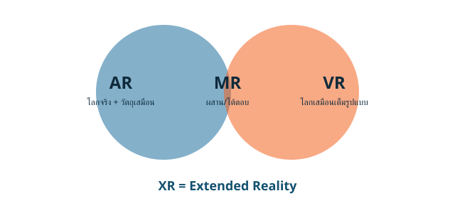

3. IT กับการพัฒนาประเทศ
| ด้าน | การใช้ IT |
|---|---|
| เศรษฐกิจ | e-payment / Digital Wallet แทนเงินสด, PromptPay ลดต้นทุนและเพิ่มความโปร่งใส, ภาษีดิจิทัลช่วยให้รัฐเก็บภาษีมีประสิทธิภาพและเป็นธรรม |
| สังคม | Social media เผยแพร่ข้อมูลรวดเร็ว (ข้อดี: เข้าถึงง่าย / ข้อเสีย: ข่าวปลอม ความขัดแย้ง) |
| การศึกษา | MOOC รองรับผู้เรียนจำนวนมาก, AI Tutor สรุปและแนะนำเฉพาะบุคคล, XR เพื่อ immersive learning |
| สื่อสาร | 5G และไฟเบอร์ครอบคลุมทั่วประเทศ สนับสนุน Remote Work และ Online Business |
| สาธารณสุข | AI อ่าน X-Ray ช่วยแพทย์, Digital Health Platform (DHP) เชื่อมข้อมูลสุขภาพ |
| สิ่งแวดล้อม | GPS/ดาวเทียมติดตามป่า ไฟป่า น้ำท่วม, Smart Agriculture ใช้ IoT และ AI |
เทคโนโลยี XR (Extended Reality)

- AR: ซ้อนวัตถุเสมือนบนโลกจริง (เช่น แอป IKEA Place)
- VR: โลกเสมือนเต็มรูปแบบ
- MR: ผสานโลกจริงและเสมือนแบบโต้ตอบได้